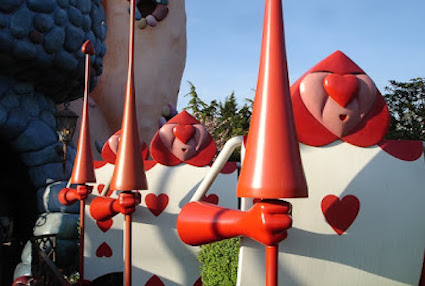

Haikus
Un olor dulce
despierta la mañana
en primavera.
Susurros rosa
tapizan los caminos
ya recorridos.
Tibios suspiros
emanan de los labios
en regocijo.
Defensa de mi villana favorita

—Señores del jurado ¿Es acaso mi culpa que algunos de mis súbditos sean traidores? Todo inicio
cuando
una niña asilvestrada allanó mi jardín y participó en un acto vandálico, donde tres de mis
jardineros tuvieron la desfachatez de plantar un árbol de rosas blancas y pintarlo de rojo para
engañarme. Como soy una alma caritativa perdoné las ofensas de la niña. Sí, es cierto que condene al
dos, al cinco y al siete de picas; pero era lo justo por insubordinación, incitación al delito y
formar parte del movimiento en contra de mi persona, este último es liderado por la duquesa.
Continuando con los sucesos que me imputan, en el juego de croquet, varios seguidores de la duquesa
se hicieron pasar por jugadores y les envié a prisión por traición. Unas horas después, la sota de
corazones robó mis tartas. Como soy una persona justa lo llevé a juicio. El primer testigo fue el
sombrerero loco, este resultó ser poco juicioso y se sospecha que es parte de un movimiento
revolucionario; logró escapar y está en la lista de caza y captura del reino por actividades
ilícitas, su participación en el mercado negro del té y de sombreros. Luego el ratón lirón
interrumpió a la siguiente testigo, dando chance a que esta escapara. El ratón será juzgado por este
acto premeditado. Para rematar la susodicha niña creció más alta que una milla, violando la nueva
ley del rey, pero es que además se atrevió a poner en duda mi juicio, la evidencia y la culpabilidad
del sospechoso. Cuando ordené su captura, me atacó a mí y a mis soldados, lo que es un acto de
desacato a la autoridad, de agresión y un atentado en contra de todo el reino. Estamos esperando que
vuelva para que le corten su cabeza... Como ven no soy culpable de los cargos que se me imputan,
solo soy una monarca tratando de hacer valer la ley y la justicia en mi reino.